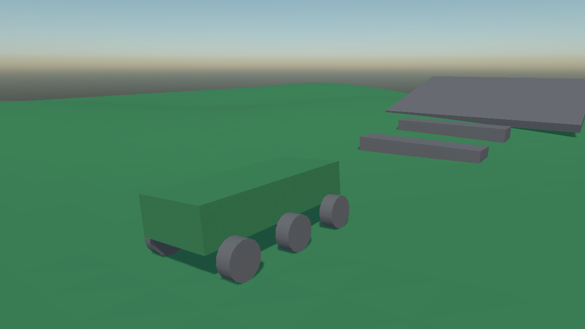
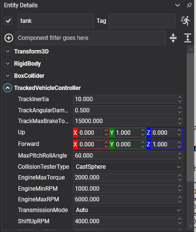

Tracked Vehicles
TrackedVehicleController drives anything that steers by running two tracks at different speeds: tanks, excavators, bulldozers, snow groomers.
It is built exactly like a wheeled vehicle, with one dynamic chassis body, one controller and a child entity per road wheel, and everything in Vehicles about the engine, the gearbox and the collision testers applies unchanged. What differs is how the wheels are driven and how the vehicle turns.

Six road wheels, none of which steers. What turns it is the two tracks running at different speeds.
How a tracked vehicle differs
- No wheel steers. Every
MaxSteerAnglestays at zero. Turning comes from driving one track faster than the other, or from running them in opposite directions to spin on the spot. - Each track is one differential. Every wheel on a side turns together at the speed its track is running, rather than each being driven separately.
- Two tracks, not four corners. There are no front-left and rear-right indices, only which wheels belong to the left track and which to the right.
TrackedVehicleController Component
Entity tank = new Entity("tank")
.AddComponent(new Transform3D() { Position = start })
.AddComponent(new RigidBody()
{
Mass = 4000f,
CenterOfMassOffset = new Vector3(0f, -0.4f, 0f),
})
.AddComponent(new BoxCollider() { Size = new Vector3(2.2f, 0.9f, 4.4f) })
.AddComponent(new TrackedVehicleController()
{
EngineMaxTorque = 2000f,
GearRatios = new[] { 2.66f, 1.78f, 1.3f, 1.0f },
ReverseGearRatios = new[] { -2.9f },
});
// Three road wheels a side. None of them steers.
foreach (var (name, offset) in roadWheels)
{
tank.AddChild(new Entity(name)
.AddComponent(new Transform3D() { LocalPosition = offset })
.AddComponent(new VehicleWheel()
{
Radius = 0.4f,
Width = 0.35f,
MaxSteerAngle = 0f,
SuspensionMinLength = 0.1f,
SuspensionMaxLength = 0.3f,
}));
}
this.Managers.EntityManager.Add(tank);
Track Properties

| Property | Default | Description |
|---|---|---|
| LeftTrackWheels | empty | The indices of the wheels the left track drives. Left empty, the wheels are split between the two tracks by where they are mounted. |
| RightTrackWheels | empty | The same for the right track. |
| TrackInertia | 10 | The rotational inertia of each track. A heavy track takes longer to spin up and longer to stop. |
| TrackAngularDamping | 0.5 | How quickly a free-running track slows down. |
| TrackMaxBrakeTorque | 15000 | The strongest braking torque a track can apply. |
Plus everything in Vehicles: the engine, the gearbox, the chassis axes and the collision tester.
Driving the Vehicle
tank.FindComponent<TrackedVehicleController>().SetDriverInput(forward, leftRatio, rightRatio, brake);
| Argument | Range | Meaning |
|---|---|---|
| forward | -1 to 1 | Throttle. Negative is reverse. |
| leftRatio | -1 to 1 | How much of the throttle the left track gets. |
| rightRatio | -1 to 1 | How much the right track gets. |
| brake | 0 to 1 | The brake. |
The two ratios are the steering:
| Left | Right | Result |
|---|---|---|
| 1 | 1 | Straight ahead. |
| 1 | 0.5 | A gentle turn to the right. |
| 1 | 0 | A tight turn about the stopped track. |
| 1 | -1 | A neutral turn: spinning on the spot. |
public class TankInput : Behavior
{
[BindComponent]
private TrackedVehicleController tank = null;
protected override void Update(TimeSpan gameTime)
{
KeyboardDispatcher keyboard = this.Managers.RenderManager.ActiveCamera3D?.Display?.KeyboardDispatcher;
if (keyboard == null)
{
return;
}
float forward = (keyboard.IsKeyDown(Keys.W) ? 1f : 0f) - (keyboard.IsKeyDown(Keys.S) ? 1f : 0f);
float steer = (keyboard.IsKeyDown(Keys.D) ? 1f : 0f) - (keyboard.IsKeyDown(Keys.A) ? 1f : 0f);
// Steering by taking speed off one track and adding it to the other. Held at full lock with no
// throttle, the two ratios end up opposite and the vehicle spins on the spot, which is the
// manoeuvre nothing on wheels can do.
float left = MathHelper.Clamp(1f + steer, -1f, 1f);
float right = MathHelper.Clamp(1f - steer, -1f, 1f);
if (forward == 0f && steer != 0f)
{
forward = 1f;
}
this.tank.SetDriverInput(forward, left, right, 0f);
}
}
Tip
Tracked vehicles are heavy and drive over things rather than around them, so CastCylinder is worth the extra cost as a collision tester: it puts the road wheels on top of kerbs and rubble instead of dropping them into every gap.
Note
A track's grip is not modelled per wheel, so the tyre telemetry on VehicleWheel, the slip and friction values and BrakeImpulse, reads zero on a tracked vehicle. HasContact, SuspensionLength and AngularVelocity all work as usual.